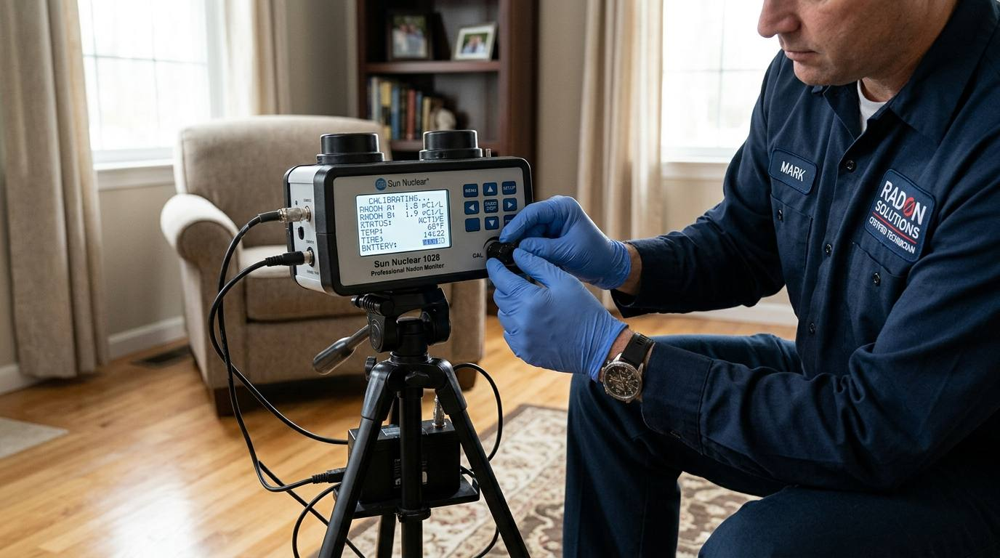

Professional Solutions for Every Property
Every foundation requires a customized assessment and pressure strategy. Select any service below to explore complete technical details and preparation requirements.

Residential Radon Testing
Standardized testing for homeowners, tenants, and families. We place calibrated digital monitors in primary occupied areas to measure indoor air concentrations under normal closed-house living conditions.

Commercial Radon Testing
Multi-room testing matrices engineered for schools, office complexes, assisted living centers, and multi-family buildings. Designed around commercial ventilation cycles and regional regulatory compliance.

Short-Term 48-Hour Testing
Electronic continuous monitors recording hourly concentrations, temperature, and barometric trends over a tight 48-hour window. Ideal for real estate deadlines, initial screening, and seasonal checks.

Long-Term Radon Monitoring
Continuous multi-month or annual alpha-track testing protocols. Captures shifts between heating and cooling seasons to establish the most statistically comprehensive annual exposure average.

Active Mitigation Systems
Engineered active soil depressurization (ASD) installations. We core sub-slab suction pits, seal floor-to-wall joints, route durable schedule-40 PVC pipe, and mount quiet exterior exhaust fans.

Post-Mitigation Verification
Follow-up testing performed 24 hours after system commissioning. Confirms proper U-tube manometer pressure differential, adequate sub-slab vacuum reach, and verified reduction in radon concentrations.